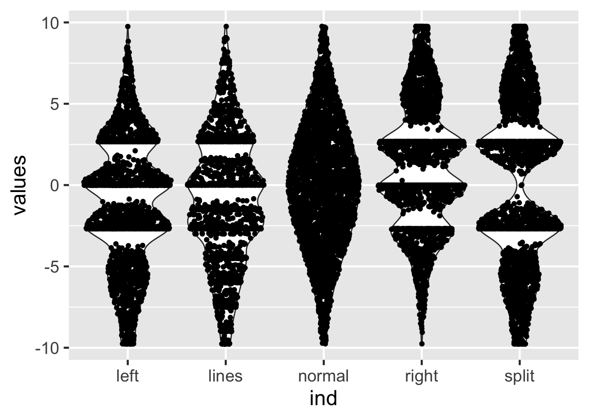
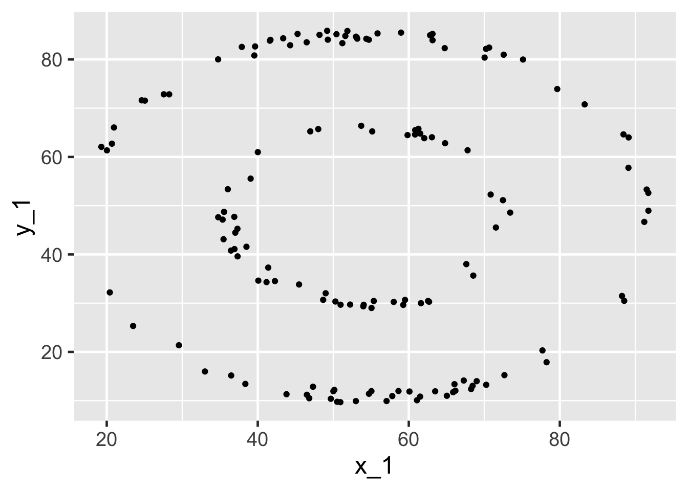

library(tidyverse)
library(ggforce)
# library(tidylog)
# Set the default font to be a bit larger:
theme_set(theme_gray(base_size = 18))10 R Graphics Exercise
10.1 Load Libraries
10.2 Exercise 1
Read in and set up the data set b, a cleaned version of our simulated data set:
a <- read.csv("data/study1.csv")
a$ind <- seq_along(a$t)
b <- a[-c(1001:1004),]
b$g.f <- factor(b$g)
b$geno <- paste(b$all1,b$all2,sep="/")Using ggplot and data set b, plot ind vs. t, coloring by case-control status (trait). What do you observe about the data?
Expand to see solution
ggplot(data=b, aes(x=ind, y=t, color=trait)) +
geom_point()
10.3 Exercise 2
Using ggplot, plot ind vs. t, coloring by case-control status (trait) and faceting by geno. What do you observe about the data?
Expand to see solution
ggplot(data=b, aes(x=ind, y=t, color=trait)) +
geom_point() +
facet_grid(~ geno)
10.4 Always plot your data
library(tidyverse)
d <- read_tsv("data/example.tsv")New names:
Rows: 142 Columns: 26
── Column specification
──────────────────────────────────────────────────────── Delimiter: "\t" dbl
(26): x...1, y...2, x...3, y...4, x...5, y...6, x...7, y...8, x...9, y.....
ℹ Use `spec()` to retrieve the full column specification for this data. ℹ
Specify the column types or set `show_col_types = FALSE` to quiet this message.
• `x` -> `x...1`
• `y` -> `y...2`
• `x` -> `x...3`
• `y` -> `y...4`
• `x` -> `x...5`
• `y` -> `y...6`
• `x` -> `x...7`
• `y` -> `y...8`
• `x` -> `x...9`
• `y` -> `y...10`
• `x` -> `x...11`
• `y` -> `y...12`
• `x` -> `x...13`
• `y` -> `y...14`
• `x` -> `x...15`
• `y` -> `y...16`
• `x` -> `x...17`
• `y` -> `y...18`
• `x` -> `x...19`
• `y` -> `y...20`
• `x` -> `x...21`
• `y` -> `y...22`
• `x` -> `x...23`
• `y` -> `y...24`
• `x` -> `x...25`
• `y` -> `y...26`n1 <- rep(c("x","y"), 13)
n2 <- c("","",rep("_",24))
n3 <- c("", "", c(sort(rep(c(1:12), 2))))
names(d) <- paste0(n1,n2,n3)
names(d) [1] "x" "y" "x_1" "y_1" "x_2" "y_2" "x_3" "y_3" "x_4" "y_4"
[11] "x_5" "y_5" "x_6" "y_6" "x_7" "y_7" "x_8" "y_8" "x_9" "y_9"
[21] "x_10" "y_10" "x_11" "y_11" "x_12" "y_12"10.5 Similar regression lines
These three data sets have very similar regression lines:
summary(lm(x ~ y, data=d)) %>% coef() Estimate Std. Error t value Pr(>|t|)
(Intercept) 56.17563819 2.87986960 19.5063131 9.435087e-42
y -0.03991951 0.05250204 -0.7603419 4.483288e-01summary(lm(x_1 ~ y_1, data=d)) %>% coef() Estimate Std. Error t value Pr(>|t|)
(Intercept) 56.31108156 2.87906158 19.5588319 7.158847e-42
y_1 -0.04269949 0.05249244 -0.8134407 4.173467e-01summary(lm(x_3 ~ y_3, data=d)) %>% coef() Estimate Std. Error t value Pr(>|t|)
(Intercept) 56.18271411 2.87924135 19.5130270 9.107718e-42
y_3 -0.04012859 0.05249468 -0.7644316 4.458966e-01ggplot(d,aes(x=x,y=y)) + geom_point() +
geom_smooth(method="lm") + ggtitle("Linear regression of y ~ x")Now try this:
ggplot(d,aes(x=x_1,y=y_1)) + geom_point() +
geom_smooth(method="lm")
Expand to see solution
ggplot(d,aes(x=x_1,y=y_1)) + geom_point() +
geom_smooth(method="lm") + ggtitle("Linear regression of y_1 ~ x_1")`geom_smooth()` using formula = 'y ~ x'And now try this:
ggplot(d,aes(x=x_3,y=y_3)) + geom_point() +
geom_smooth(method="lm")
Expand to see solution
10.5.1 Always plot your data!
ggplot(d,aes(x=x_3,y=y_3)) + geom_point() +
geom_smooth(method="lm") + ggtitle("Linear regression of y_3 ~ x_3")`geom_smooth()` using formula = 'y ~ x'
10.6 Always plot your data
f <- read_tsv("data/BoxPlots.tsv")
# Delete the first column
f <- f[,-1]
head(f)# A tibble: 6 × 5
left lines normal right split
<dbl> <dbl> <dbl> <dbl> <dbl>
1 -9.77 -9.77 -9.76 -9.76 -9.77
2 -9.76 -9.74 -9.72 -9.05 -9.77
3 -9.75 -9.77 -9.68 -8.51 -9.77
4 -9.77 -9.77 -9.64 -8.24 -9.77
5 -9.76 -9.77 -9.6 -8.82 -9.77
6 -9.77 -9.76 -9.56 -8.07 -9.76Stacking vectors concatenates multiple vectors into a single vector along with a factor indicating where each observation originated.
head(stack(f),2) values ind
1 -9.769107 left
2 -9.763145 leftNow try this:
ggplot(stack(f), aes(x = ind, y = values)) +
geom_boxplot()
Expand to see solution
10.7 Identical box plots
These data have essentially identical box plots.

10.8 Boxplots
While the box plots are identical, box plots may not tell the whole story.
Let’s try violin plots instead:
ggplot(stack(f), aes(x = ind, y = values)) +
geom_violin()A violin plot is a mirrored density plot.
Expand to see solution
10.9 Non-identical violin plots

10.10 Sina plots
Sidiropoulos, N., Sohi, S.H., Rapin, N., and Bagger, F.O. (2015). SinaPlot: an enhanced chart for simple and truthful representation of single observations over multiple classes. bioRxiv 28191. https://www.biorxiv.org/content/early/2015/10/02/028191
library(ggforce)
ggplot(stack(f), aes(x = ind, y = values)) +
geom_violin() + geom_sina()
Expand to see solution
10.11 Sina plots

10.12 Sina plots
method == "counts": The borders are defined by the number of samples that occupy the same bin.
ggplot(stack(f), aes(x = ind, y = values)) +
geom_violin() + geom_sina(method="count")
Expand to see solution
10.13 Sina plots

10.14 Drawing multiple graphs
Sometimes we’d like to draw multiple plots, looping across variables. Doing this within an R Markdown or Quarto Markdown document using ggplot2 is tricky. See https://dplyr.tidyverse.org/articles/programming.html and https://r4ds.hadley.nz/functions.html#plot-functions for details.
Here’s one way to do this - this example code will generate two scatter plots:
x.names <- c("x","x_1")
y.names <- c("y", "y_1")
for (i in 1:2) {
x.nam <- sym(x.names[i])
y.nam <- sym(y.names[i])
print(ggplot(data=d, aes(x = {{ x.nam }},
y = {{ y.nam }})) +
geom_point())
}

10.15 Writing ggplot functions
See https://r4ds.hadley.nz/functions.html#plot-functions
library(palmerpenguins)
PlDensity <- function(fill, ...) {
ggplot(penguins %>% filter(!is.na(bill_length_mm)),
aes(bill_length_mm, fill = {{ fill }})) +
geom_density(alpha = 0.5) +
facet_wrap(vars(...))
}Example from: https://twitter.com/yutannihilat_en/status/1574387230025875457?s=20&t=FLbwErwEKQKWtKIGufDLIQ
PlDensity(species)
PlDensity(island, sex) %>% print() %>% suppressWarnings()
PlDensity(sex, island, year) %>% print() %>% suppressWarnings()
10.16 Exercise 3
Consider this example code:
histogram <- function(df, var, binwidth) {
df |>
ggplot(aes({{ var }})) +
geom_histogram(binwidth = binwidth)
}From: https://twitter.com/hadleywickham/status/1574373127349575680?s=20&t=FLbwErwEKQKWtKIGufDLIQ
When applied to the quantitative trait t from the data frame b, this generates this histogram:
histogram(b, t, 0.1)10.16.1 Exercise
After reading the example above, extend the histogram function to allow facetting and use it to draw a histogram of the quantitative trait t facetted by geno using the data set b that we set up above.
Hints
- See https://r4ds.hadley.nz/functions.html#facetting
- Use the
vars()function
Expand to see solution
Hadley Wickham states:
You have to use the vars() syntax
foo <- function(x) {
ggplot(mtcars) +
aes(x = mpg, y = disp) +
geom_point() +
facet_wrap(vars({{ x }}))
}Tweet: https://twitter.com/hadleywickham/status/1574380137524887554?s=20&t=FLbwErwEKQKWtKIGufDLIQ
histogram <- function(df, var, binwidth, grp) {
df |>
ggplot(aes({{ var }})) +
geom_histogram(binwidth = binwidth) +
facet_wrap(vars({{ grp }}))
}histogram(b, t, 0.1)
histogram(b, t, 0.1, geno)
10.17 Source of data
Illustrative data sets from https://www.autodeskresearch.com/publications/samestats